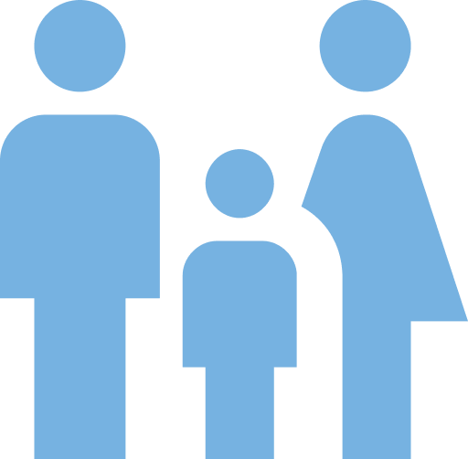
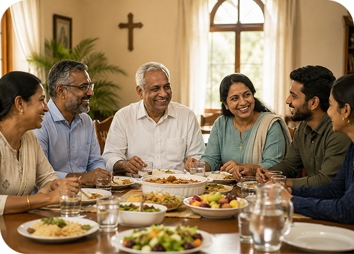
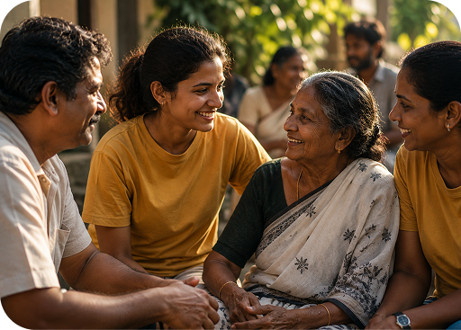
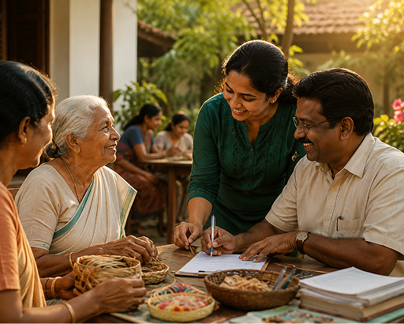

Compassion in Action Since 1985
For over 40 years, Guardian Angel Care Charitable Society has been serving orphaned children, the elderly, the sick, and vulnerable communities through healthcare, education, and compassionate care.
40+
Years of
Service
5000+
Lives
Supported

1000+
Families
Supported
20+
Community
Programs
Thousands
of Volunteer
Hours
About Us
We are committed to advancing inclusive and sustainable community development by serving orphaned children, the destitute, the elderly, the terminally ill, and individuals in need of mental healthcare.
Through structured care programmes, accessible quality education, vocational training, and compassionate palliative and geriatric services, we create measurable social impact and sustainable pathways to dignity, independence, and long-term resilience.

To provide compassionate healthcare and rehabilitation services
To support the elderly, sick, poor, and marginalized
To promote education and social empowerment
To create institutions rooted in ethical and humanitarian values

To create institutions rooted in ethical and humanitarian values

To extend care without discrimination based on religion, caste, or social background
Our Services
Providing compassionate healthcare and rehabilitation services that restore health, hope, and dignity to vulnerable individuals and communities.
Providing compassionate healthcare and rehabilitation services that restore health, hope, and dignity to vulnerable individuals and communities.
Providing compassionate healthcare and rehabilitation services that restore health, hope, and dignity to vulnerable individuals and communities.

Providing compassionate healthcare and rehabilitation services that restore health, hope, and dignity to vulnerable individuals and communities.
Join us in upholding Christian values and creating a compassionate and inclusive society. Together, we can provide care, support, and empowerment to destitute individuals, elderly persons, people with intellectual disabilities, and orphans. Your support will help ensure that every individual lives with dignity, respect, and access to essential resources, fostering a world where well-being and happiness are accessible to all.
Real stories from real people making a difference through skill swapping
The love and care I received during difficult times brought me comfort and peace. Guardian Angel became a family when I needed one most.
 Sarah L
Sarah L
Their support helped me rebuild my life with dignity and hope. I am deeply grateful for the kindness and encouragement I received.
 Emily R
Emily R
The compassion shown to my elderly mother gave our family strength and reassurance. We will always cherish their selfless service.
 Michael K
Michael K
Through education and vocational support, I gained confidence and a brighter future. Guardian Angel truly changed the course of my life.
 Jason M
Jason M
The healthcare facilities and compassionate nurses gave me new life when I had lost all hope. I am forever grateful for their guidance.
 Anna S
Anna S
Their rehabilitation programs helped my brother recover completely. Today he works and supports himself independently.
 David P
David P
Receiving regular educational sponsorship meant my children could continue their studies without interruptions or fear.
 Grace T
Grace T
Being a part of their community training initiatives opened doors to earning an honest living. It changed our future completely.
 Robert N
Robert N
The warmth and unconditional love shown by the volunteers made me feel valued again. Truly a blessing to humanity.
 Rebecca W
Rebecca W
They gave shelter and nutritional food to senior citizens who had nowhere else to turn. Such selflessness is rare today.
 Daniel C
Daniel C
Their mental health counseling and emotional support provided the strength I needed to face life with confidence and peace.
 Sophia M
Sophia M
The vocational training programs helped several youth in our neighborhood secure meaningful livelihood opportunities.
 Kevin D
Kevin D